Step 10 Add sample records and test the rules
Portfolio 1 in Section 4 of the assessment brief requires keys and constraints. This step demonstrates that valid records are accepted and invalid records are rejected.
Use the PostgreSQL session from Step 9. Replace the filename prefix Harrison_Perete_202600001 with your own Surname_Firstname_StudentID. Keep the picture's actual extension, .png or .jpg.
Keep all pictures in the screenshots subfolder created in Step 8. SQL files stay directly inside portfolio-1-database-design.
1. Prepare the sample records
The library example contains two members, one book, three physical copies and three loans. One loan is returned and two are open. All personal details are fictional.
Save the sample SQL and the test SQL inside portfolio-1-database-design, using your own name and ID in the filenames.
For your own case study, use this prompt:
I am completing MIT 8103 Portfolio 1. Use my existing PostgreSQL schema
to create a small set of fictional records and test its constraints.
MY SCHEMA AND BUSINESS RULES
[PASTE YOUR SQL FROM STEP 9 AND YOUR BUSINESS RULES]
Return two clearly labelled SQL files:
1. SampleData.sql: a small valid dataset, wrapped in BEGIN and COMMIT.
2. ConstraintTests.sql: separate deliberately invalid INSERT statements.
Keep the existing schema unchanged. Insert parent records before records
that reference them. Look up generated IDs using unique values rather
than guessing ID numbers. Use fictional names and example.com emails.
Include valid examples relevant to my system's different record states.
Test one rule per invalid statement: required fields, unique values,
foreign keys and each CHECK or conditional uniqueness rule in my schema.
Use otherwise valid values so a different rule does not cause the error.
State the expected error in a short comment above each test.
Run negative tests separately, outside a transaction block, so one error
does not stop the next test. End with a query counting the rows in each
table and state the expected counts after all invalid inserts fail.
Use short, beginner-friendly comments. No DROP, DELETE or TRUNCATE.
Do not claim these statements have already run.2. Check the tables before inserting
SELECT 'member' AS table_name, count(*) AS row_count FROM public.member
UNION ALL SELECT 'book', count(*) FROM public.book
UNION ALL SELECT 'book_copy', count(*) FROM public.book_copy
UNION ALL SELECT 'loan', count(*) FROM public.loan;For the first run, all four counts should be 0. If records already exist, stop and check them rather than inserting the same sample twice.
3. Insert the library records
Run each block separately. For another case study, run the matching statements from your own sample SQL file.
BEGIN;Expected result: BEGIN.
Add the members
INSERT INTO public.member (membership_number, full_name, email)
VALUES ('M001', 'Ada James', 'ada@example.com'),
('M002', 'Ben Cole', 'ben@example.com');Expected result: INSERT 0 2. The last number means two rows were added.
Take a screenshot of the command and result: Mac: Shift + Command + 4; Windows: Windows + Shift + S. Save it as Harrison_Perete_202600001_P1_InsertMembers.png. In Codespaces Explorer, right-click its screenshots folder → Upload… → select the picture.

Add the book
INSERT INTO public.book (isbn, title)
VALUES ('9780385474542', 'Things Fall Apart');Expected result: INSERT 0 1.
Take a screenshot of the command and result: Mac: Shift + Command + 4; Windows: Windows + Shift + S. Save it as Harrison_Perete_202600001_P1_InsertBook.png. Upload it into portfolio-1-database-design/screenshots using Upload… in the folder's right-click menu.
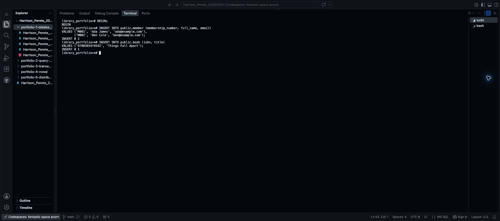
Add three copies
The small SELECT inside each row finds the book's ID using its ISBN. This avoids guessing an automatically generated ID.
INSERT INTO public.book_copy (book_id, barcode)
VALUES ((SELECT book_id FROM public.book WHERE isbn = '9780385474542'), 'LIB001'),
((SELECT book_id FROM public.book WHERE isbn = '9780385474542'), 'LIB002'),
((SELECT book_id FROM public.book WHERE isbn = '9780385474542'), 'LIB003');Expected result: INSERT 0 3.
Take a screenshot of the command and result: Mac: Shift + Command + 4; Windows: Windows + Shift + S. Save it as Harrison_Perete_202600001_P1_InsertCopies.png. Upload it into portfolio-1-database-design/screenshots.
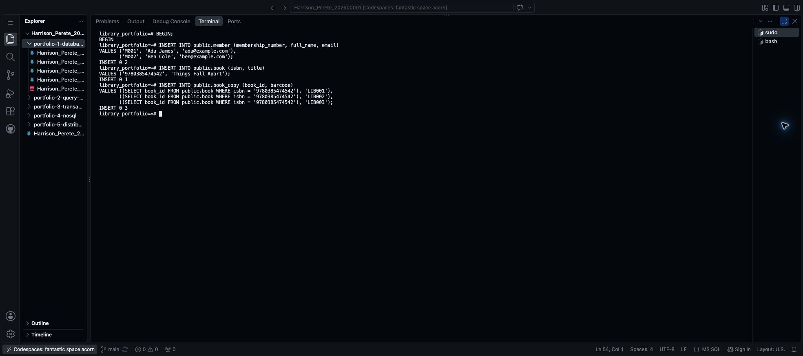
Add a returned loan
INSERT INTO public.loan (member_id, copy_id, borrowed_at, due_at, returned_at)
VALUES (
(SELECT member_id FROM public.member WHERE membership_number = 'M001'),
(SELECT copy_id FROM public.book_copy WHERE barcode = 'LIB001'),
'2026-10-01 09:00+00', '2026-10-08 09:00+00', '2026-10-07 10:00+00'
);Expected result: INSERT 0 1. Ada borrowed LIB001 and returned it before Ben's later loan.
Take a screenshot of the command and result: Mac: Shift + Command + 4; Windows: Windows + Shift + S. Save it as Harrison_Perete_202600001_P1_InsertReturnedLoan.png. Upload it into portfolio-1-database-design/screenshots.
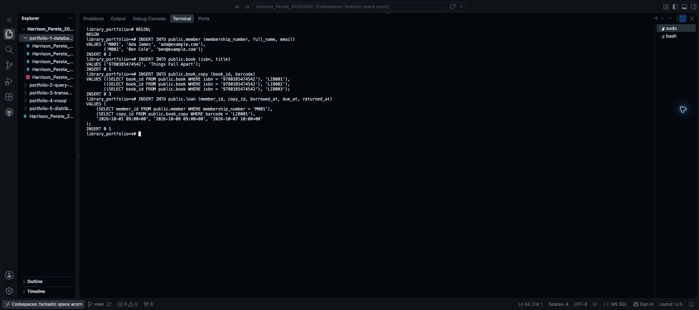
Add two open loans
INSERT INTO public.loan (member_id, copy_id, borrowed_at, due_at)
VALUES (
(SELECT member_id FROM public.member WHERE membership_number = 'M002'),
(SELECT copy_id FROM public.book_copy WHERE barcode = 'LIB001'),
'2026-10-15 09:00+00', '2026-10-22 09:00+00'
), (
(SELECT member_id FROM public.member WHERE membership_number = 'M001'),
(SELECT copy_id FROM public.book_copy WHERE barcode = 'LIB002'),
'2026-10-01 09:00+00', '2026-10-08 09:00+00'
);Expected result: INSERT 0 2. returned_at is not supplied, so both loans have no return date. LIB003 remains available.
Take a screenshot of the command and result: Mac: Shift + Command + 4; Windows: Windows + Shift + S. Save it as Harrison_Perete_202600001_P1_InsertOpenLoans.png. Upload it into portfolio-1-database-design/screenshots.
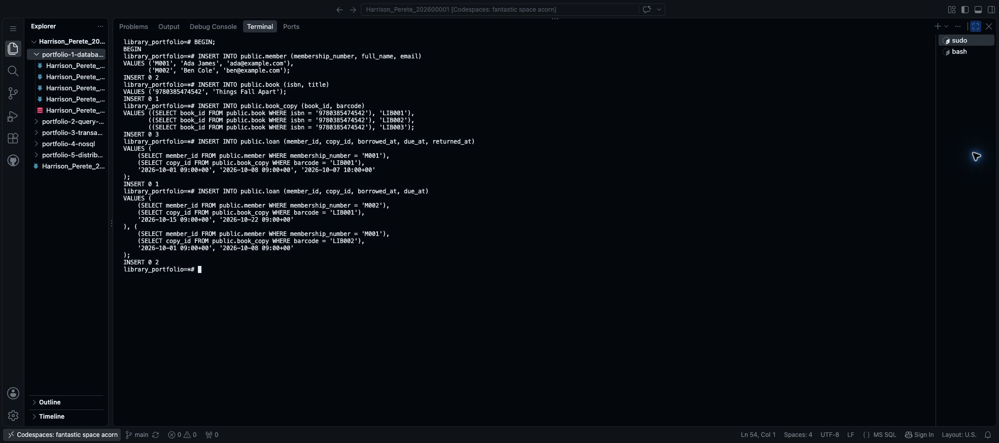
COMMIT;Expected result: COMMIT. The sample records are saved. If an earlier insert fails, use ROLLBACK;, correct the script and restart the sample inserts instead of committing.
Take a screenshot of the command and result: Mac: Shift + Command + 4; Windows: Windows + Shift + S. Save it as Harrison_Perete_202600001_P1_SampleDataCommit.png. Upload it into portfolio-1-database-design/screenshots.
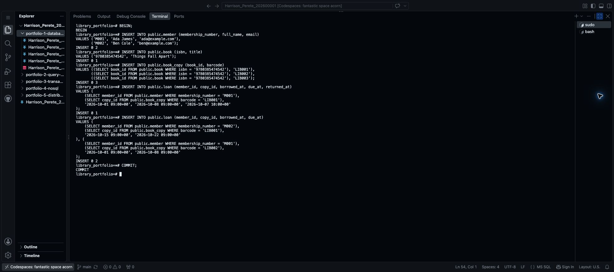
4. Test records that should be rejected
Run the following statements one at a time, without adding BEGIN. Each ERROR below is expected: the database is rejecting an invalid record. A rejected statement adds no row, and the next test can run normally.
A missing required name
INSERT INTO public.member (membership_number, full_name, email)
VALUES ('TEST_NULL', NULL, 'missing@example.com');Expected result: an error saying that full_name violates a not-null constraint.
Take a screenshot of the command and error: Mac: Shift + Command + 4; Windows: Windows + Shift + S. Save it as Harrison_Perete_202600001_P1_TestRequiredName.png. Upload it into portfolio-1-database-design/screenshots.
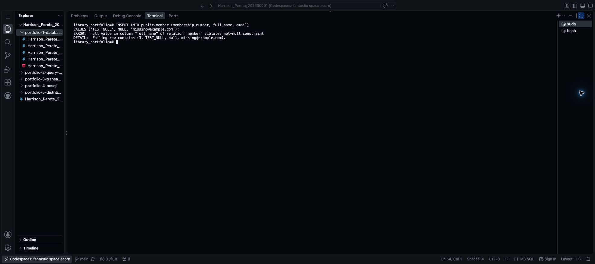
A repeated email
INSERT INTO public.member (membership_number, full_name, email)
VALUES ('TEST_EMAIL', 'Test Member', 'ada@example.com');Expected result: a duplicate-key error naming member_email_key. Ada's email already belongs to a member.
Take a screenshot of the command and error: Mac: Shift + Command + 4; Windows: Windows + Shift + S. Save it as Harrison_Perete_202600001_P1_TestUniqueEmail.png. Upload it into portfolio-1-database-design/screenshots.
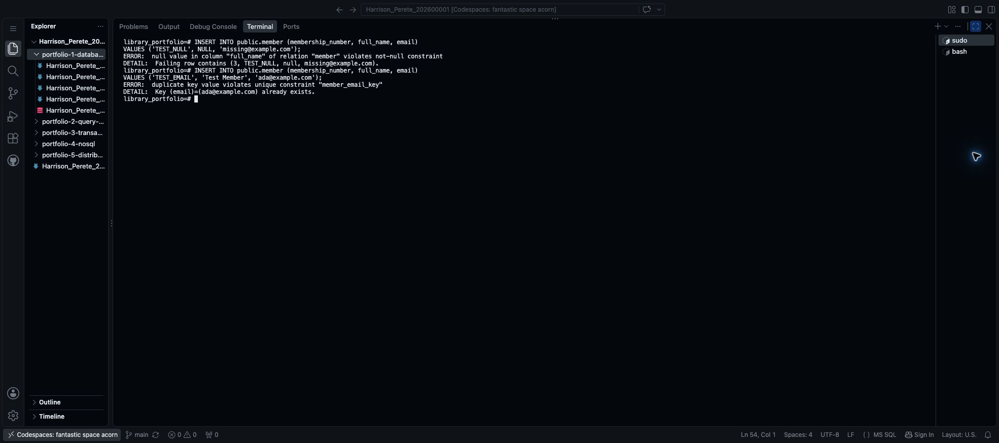
A copy linked to a missing book
INSERT INTO public.book_copy (book_id, barcode)
VALUES (-1, 'TEST_BAD_BOOK');Expected result: a foreign-key error naming book_copy_book_fk. Book -1 does not exist in this practice database.
Take a screenshot of the command and error: Mac: Shift + Command + 4; Windows: Windows + Shift + S. Save it as Harrison_Perete_202600001_P1_TestForeignKey.png. Upload it into portfolio-1-database-design/screenshots.
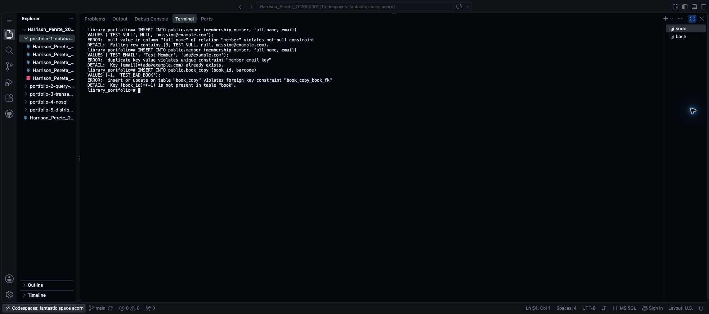
A due date before borrowing
INSERT INTO public.loan (member_id, copy_id, borrowed_at, due_at)
VALUES (
(SELECT member_id FROM public.member WHERE membership_number = 'M001'),
(SELECT copy_id FROM public.book_copy WHERE barcode = 'LIB003'),
'2026-10-20 09:00+00', '2026-10-19 09:00+00'
);Expected result: a check-constraint error naming loan_due_after_borrowing.
Take a screenshot of the command and error: Mac: Shift + Command + 4; Windows: Windows + Shift + S. Save it as Harrison_Perete_202600001_P1_TestDueDate.png. Upload it into portfolio-1-database-design/screenshots.
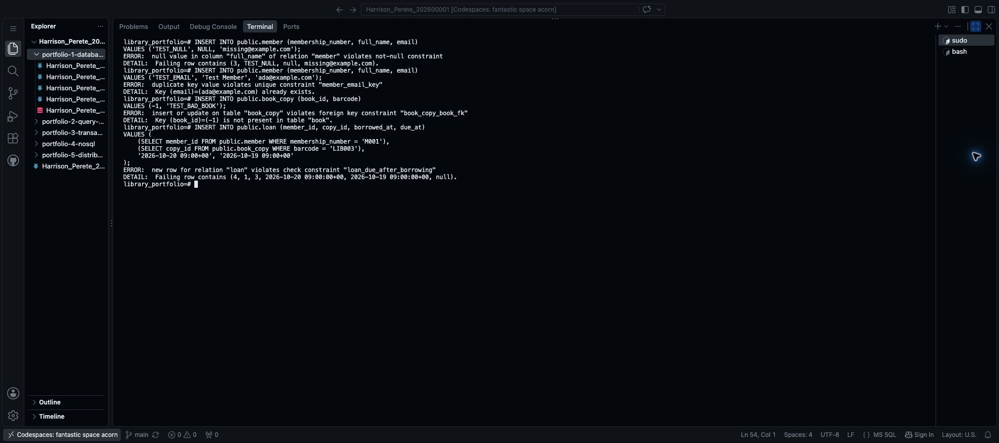
A return before borrowing
INSERT INTO public.loan (member_id, copy_id, borrowed_at, due_at, returned_at)
VALUES (
(SELECT member_id FROM public.member WHERE membership_number = 'M001'),
(SELECT copy_id FROM public.book_copy WHERE barcode = 'LIB003'),
'2026-10-20 09:00+00', '2026-10-27 09:00+00', '2026-10-19 09:00+00'
);Expected result: a check-constraint error naming loan_return_not_before_borrowing.
Take a screenshot of the command and error: Mac: Shift + Command + 4; Windows: Windows + Shift + S. Save it as Harrison_Perete_202600001_P1_TestReturnDate.png. Upload it into portfolio-1-database-design/screenshots.
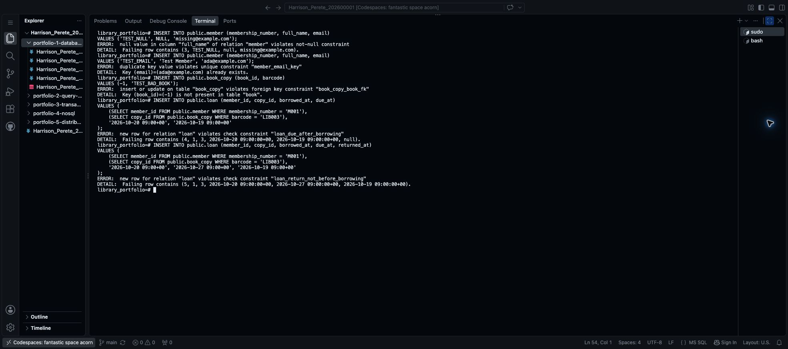
A second open loan for the same copy
INSERT INTO public.loan (member_id, copy_id, borrowed_at, due_at)
VALUES (
(SELECT member_id FROM public.member WHERE membership_number = 'M001'),
(SELECT copy_id FROM public.book_copy WHERE barcode = 'LIB001'),
'2026-10-17 09:00+00', '2026-10-24 09:00+00'
);Expected result: a duplicate-key error naming loan_one_open_copy. Ben already has an open loan for LIB001.
Take a screenshot of the command and error: Mac: Shift + Command + 4; Windows: Windows + Shift + S. Save it as Harrison_Perete_202600001_P1_TestOpenLoan.png. Upload it into portfolio-1-database-design/screenshots.
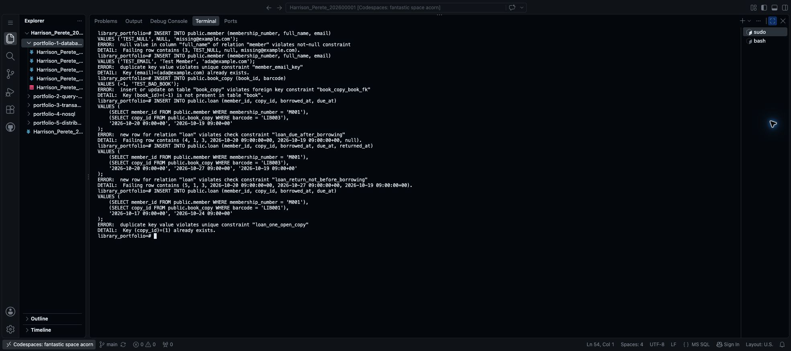
If a test succeeds instead of failing, stop and investigate before continuing. Check the error's rule name too: an error from a different rule does not prove the intended rule works.
5. Check that the valid records remain
Run the count query from Section 2 again. Expected counts:
| table_name | row_count |
|---|---|
| member | 2 |
| book | 1 |
| book_copy | 3 |
| loan | 3 |
Take a screenshot of the command and result: Mac: Shift + Command + 4; Windows: Windows + Shift + S. Save it as Harrison_Perete_202600001_P1_RecordCounts.png. Upload it into portfolio-1-database-design/screenshots.
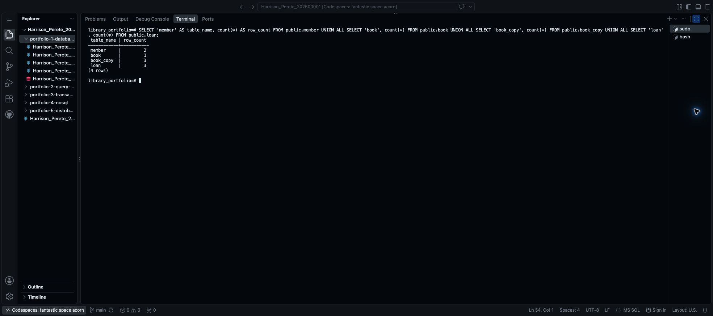
The failed inserts should not add records. Automatically generated IDs may have gaps after failed inserts; that does not mean rows are missing.
6. Save your progress
In the separate terminal with the $ prompt:
git diff --check
git add portfolio-1-database-design/
git diff --cached --stat
git commit -m "Add sample data and constraint tests"
git push origin mainCheck that your SQL files and screenshots appear on GitHub. These tests cover the listed constraints, not every possible input or the return-once transaction workflow.
Library files: sample records and constraint tests.